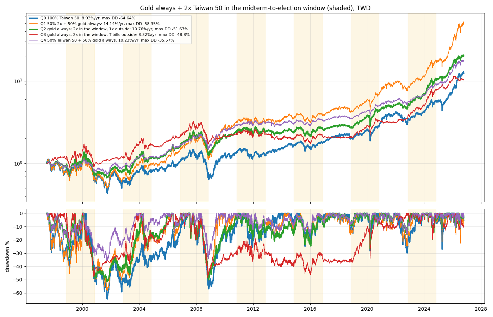

RS-TX-20261018-005 · TX · 2026-10-18
Gold always with a 2x Taiwan 50 only from the US midterm to the election: 10.76% CAGR, −52% max drawdown over 1997–2026; buying the 2x at once beat staged or pullback entries in 5 of 7 windows
一半資金一直持有黃金，另一半在期中選舉到大選之間買正二、其他時間抱 0050，報酬和回檔如何？正二該什麼時候買？
Headline Metrics 關鍵數字
10.76
q2 plan cagr %
-51.67
q2 plan max dd %
-35.57
q4 max dd %
3
q2 beat q4 windows
Key Findings 重點發現
介於 0050＋黃金與正二＋黃金之間
此做法年化 10.76%、最大回檔 −51.67%；正二＋黃金一直持有 14.14%、−58.35%；0050＋黃金 10.23%、−35.57%；單抱台股 8.93%、−64.64%。
窗口內正二只有 3/7 輪勝過 1 倍
與 0050＋黃金相比，2002、2018、2022 勝，1998（2000 崩盤）、2006（2008 崩盤）、2010、2014 輸。加權本身在 7 個窗口中漲了 4 個。
一次買進勝過分批或等回檔
分 6 個月買：每個窗口 −2.29 個百分點，7 輪贏 2 輪；等回檔 10%：−2.68，7 輪贏 2 輪。7 個窗口無法分辨。
窗口外改放公債
年化 8.32%、最大回檔 −48.80%：報酬比窗口外抱 1 倍低，回檔略小。
Chart 圖表


詮釋與實務意義
黃金一直持有、正二只在期中選舉到大選之間持有，報酬和回檔都介於 0050＋黃金與正二＋黃金一直持有之間。這個窗口對台股並不穩定：7 輪中只有 3 輪用正二比 1 倍好，1998 和 2006 兩輪剛好碰上崩盤。進場時間上，選後一次買進在 7 輪中有 5 輪勝過分批或等回檔，但樣本太少無法分辨。
限制與注意事項
- 只有 7 個完整窗口，無法分辨進場規則。
- 資料與代理同 RS-TX-20261018-004（加權 + 3.0% 比 0050 每年少 3.6 個百分點）。
- 黃金為台幣計價的 XAUUSD 現貨，未計 1OZ 期貨轉倉成本；紐約收盤延後一個台股交易日對齊。
- 2026–2028 的窗口還沒發生。